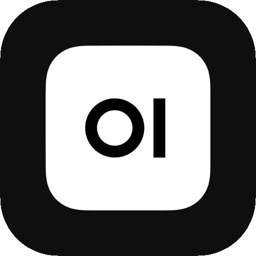

A native macOS wrapper for your Open WebUI instance — with a menu-bar quick-search and global hotkey.
Enter the URL of your Open WebUI instance. This can be a local server or a hosted URL.
Open WebUI Desktop is configured and ready. You can change these settings any time from the menu bar.